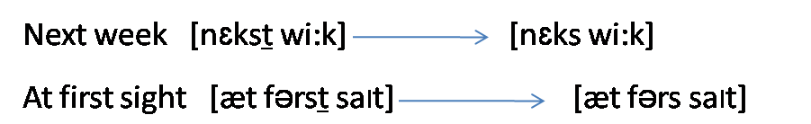
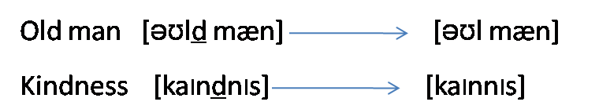
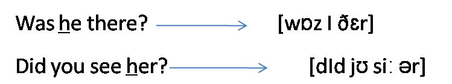

It is the omission of a sound segment which would be present in the deliberate pronunciation of a word. The sound segment may be realized as zero, have zero realization or be deleted.
Segments are more likely to be elided in the following contexts:
1- When /t/ follows a strong consonant and precedes any consonant.
2- When /d/ occurs between consonants.
3- When /h/ occurs in pronominal weak forms.
